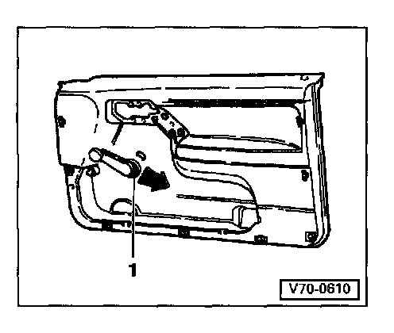
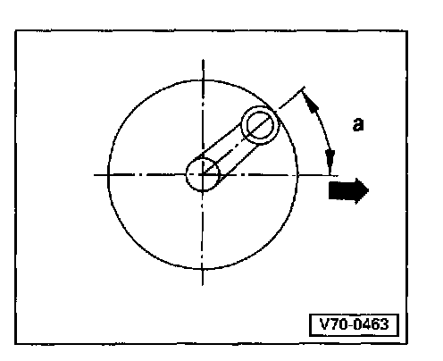

Window Handle: Service and Repair
Window crank, removing and installingRemoving

Slide spacer 1 in direction of arrow (retaining clip will be unlocked) and pull window crank off drive.
Installing

The illustration shows the left window crank (right window crank is opposite).
Clip window crank on drive in locked position.
Installed position with window closed:
Angle a = 450 ±12°
Arrow points forward